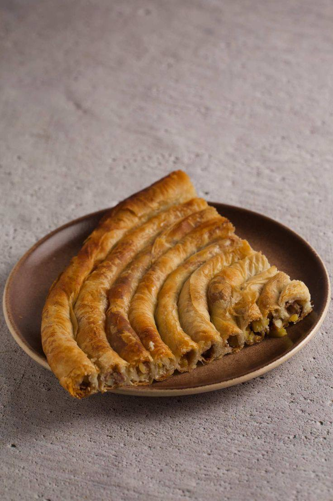
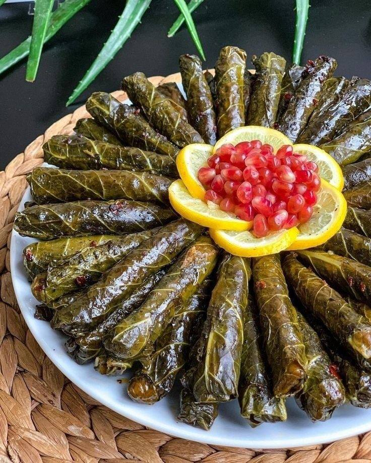

Istanbul, la plus grande ville de Turquie, est une métropole fascinante qui s’étend sur deux continents, l’Europe et l’Asie, séparés par le détroit du Bosphore.  Ancienne capitale des empires romain, byzantin et ottoman, elle est riche d’un patrimoine historique et culturel exceptionnel. Ses monuments emblématiques, tels que la basilique Sainte-Sophie, la Mosquée Bleue et le palais de Topkapi, témoignent de son passé glorieux. Aujourd’hui, Istanbul est un carrefour dynamique où se mêlent traditions ancestrales et modernité, offrant aux visiteurs une expérience unique entre histoire millénaire et effervescence contemporaine.
Sainte Sophie
La Sainte-Sophie, ou Hagia Sophia, est un chef-d’œuvre architectural situé à Istanbul, en Turquie, et l’un des monuments les plus emblématiques du monde. Construite au VIᵉ siècle sous l’empereur byzantin Justinien, cette basilique était autrefois le plus grand édifice chrétien du monde et un symbole de la splendeur de l’Empire byzantin.
Après avoir servi de cathédrale chrétienne, puis de mosquée ottomane, la Sainte-Sophie a été transformée en musée au XXᵉ siècle, avant de redevenir une mosquée en 2020. Son architecture exceptionnelle, avec sa coupole majestueuse et ses mosaïques époustouflantes, reflète la rencontre des cultures chrétienne et musulmane, faisant de la Sainte-Sophie un symbole de l’histoire complexe et de la richesse culturelle d’Istanbul.
Mosquée Bleue
La Mosquée Bleue, ou Sultanahmet Camii, est l’un des monuments les plus célèbres et majestueux d’Istanbul. Construit au début du XVIIᵉ siècle sous le règne du sultan Ahmed Ier, cet édifice impressionnant est renommé pour ses six minarets et son intérieur orné de milliers de carreaux de céramique bleus qui lui donnent son nom.
En tant que lieu de culte actif, la Mosquée Bleue incarne l’union de la grandeur de l’architecture ottomane et de la spiritualité musulmane. Sa silhouette imposante, visible depuis presque toute la ville, ainsi que son atmosphère sereine et ses décorations raffinées, en font un lieu incontournable pour les visiteurs d’Istanbul, symbolisant à la fois la splendeur de l’Empire ottoman et l’héritage culturel de la ville.
Grand Bazar
Le Grand Bazar d’Istanbul, l’un des plus anciens et des plus grands marchés couverts au monde, est un véritable labyrinthe de ruelles colorées et animées. Fondé au XVᵉ siècle sous l’Empire ottoman, il regroupe plus de 4 000 boutiques réparties sur une superficie de 30 000 m². Ce marché historique est un lieu incontournable pour ceux qui souhaitent s’imprégner de l’effervescence et des traditions commerciales d’Istanbul.
Le Grand Bazar est un véritable centre vivant, où se mêlent les odeurs d’épices, de thé, et de cuir, et où l’on peut dénicher des trésors allant des tapis faits main aux bijoux en or, en passant par les souvenirs traditionnels. Ce marché représente bien plus qu’un lieu de commerce : il est un témoin de l’histoire, de la culture et de l’hospitalité de la ville, où chaque coin raconte une histoire fascinante.
Citerne Basilique
La Citerne Basilique, ou Yerebatan Sarnıcı, est l’une des merveilles souterraines les plus intrigantes d’Istanbul. Construite au VIᵉ siècle sous l’empereur byzantin Justinien, cette immense citerne était destinée à stocker l’eau nécessaire au palais impérial et aux habitants de la ville. Ce lieu fascinant, qui s’étend sur 9 800 m², est aujourd’hui un site touristique unique, où les visiteurs peuvent déambuler entre les rangées de colonnes majestueuses, éclairées par des jeux de lumière mystérieux.
La Citerne Basilique se distingue par son atmosphère envoûtante, avec ses colonnes antiques, certaines reposant sur des bases sculptées, et ses éléments décoratifs, comme les têtes de Méduse qui ornent deux des colonnes. Ce site historique, à la fois majestueux et chargé de mystère, offre un aperçu fascinant de l’ingénierie byzantine et une expérience unique au cœur d’Istanbul.
Tour Galata
La Tour de Galata, l’un des monuments les plus emblématiques d’Istanbul, se dresse fièrement dans le quartier du même nom, offrant une vue panoramique imprenable sur la ville. Construite au XIVᵉ siècle par les Génois, cette tour imposante servait à la fois de tour de guet et de point stratégique pour surveiller le port de la Corne d’Or.
Aujourd’hui, la Tour de Galata est un symbole de l’histoire et de l’architecture médiévale d’Istanbul. Son sommet offre un cadre parfait pour admirer les toits de la vieille ville, la silhouette de la Mosquée Bleue et le Bosphore. Véritable point de repère, elle est aussi un lieu prisé des visiteurs, qui viennent y admirer le panorama spectaculaire tout en découvrant l’héritage culturel du quartier historique de Galata.
Tour de Léandre
La Tour de Léandre, ou Kız Kulesi en turc, est l’une des structures les plus emblématiques et romantiques d’Istanbul. Perchée sur un îlot rocheux au milieu du Bosphore, cette tour mystérieuse a traversé les siècles, servant à la fois de phare, de forteresse et de station de quarantaine. Sa silhouette gracile et ses légendes fascinantes, notamment celle de la tragique histoire d’amour entre Leandre et Hero, en font un lieu particulièrement envoûtant.
Aujourd’hui, la Tour de Léandre est un symbole de la ville, offrant une vue spectaculaire sur le Bosphore et la skyline d’Istanbul. Accessible en bateau, elle attire les visiteurs non seulement pour son histoire, mais aussi pour son ambiance unique, où la mer et les lumières de la ville se mêlent dans une danse éternelle.
Palais de Topkapi
Le Palais de Topkapi, situé au cœur d’Istanbul, est l’un des monuments les plus majestueux et chargés d’histoire de la ville. Ancienne résidence des sultans ottomans pendant près de 400 ans, de 1465 à 1856, ce complexe impressionnant s’étend sur plusieurs hectares et offre une vue splendide sur le Bosphore. Construit sous le règne du sultan Mehmed II, le palais est un exemple exceptionnel de l’architecture ottomane, alliant splendeur et raffinement dans ses salles richement décorées, ses cours intérieures et ses jardins luxuriants.
Aujourd’hui, le Palais de Topkapi est un musée fascinant, abritant des trésors impériaux, des manuscrits anciens, des vêtements royaux et des reliques sacrées. Il offre aux visiteurs un aperçu unique de la vie à la cour des sultans et de la grandeur de l’Empire ottoman, tout en étant un lieu où l’histoire, l’art et la culture se rencontrent.
Quelques les Spécialités Culinaires
Borek
Le börek, ou borek, est une pâtisserie salée emblématique des cuisines des Balkans, de la Turquie et du Moyen-Orient, appréciée pour sa texture croustillante et ses garnitures variées. Préparé à partir de fines feuilles de pâte filo ou yufka, ce mets se décline sous de nombreuses formes, qu’il soit roulé, plié en triangles, ou présenté en couches. Les garnitures traditionnelles vont du fromage (comme la feta) aux épinards, en passant par la viande hachée ou les pommes de terre. À la fois simple et raffiné, le börek est souvent servi lors des repas en famille, des célébrations ou en tant qu’en-cas. Il incarne parfaitement la richesse et la diversité des saveurs méditerranéennes et ottomanes.

Dolma
Le dolma, symbole incontournable des cuisines méditerranéenne, moyen-orientale et balkanique, est un plat traditionnel apprécié pour son équilibre entre simplicité et raffinement. Ce mets consiste en des légumes, souvent des feuilles de vigne, des poivrons ou des courgettes, farcis d’un mélange savoureux à base de riz, d’herbes fraîches, d’épices, et parfois de viande hachée. Servi chaud ou froid, le dolma peut être un plat principal ou une entrée, accompagné d’un filet de citron ou de yaourt. Héritage culinaire transmis à travers les générations, il reflète l’art de marier les saveurs locales et la convivialité des repas partagés.

Baklava
Le baklava est une pâtisserie emblématique, célébrée à travers le Moyen-Orient, les Balkans et l'Asie centrale pour son raffinement et sa douceur. Préparé avec des couches délicates de pâte filo croustillante, des fruits secs comme les pistaches, les noix ou les amandes, et arrosé d’un sirop ou de miel délicatement parfumé, ce dessert est une véritable invitation au plaisir des sens. Symbole de fête et d’hospitalité, le baklava est souvent partagé lors des grandes occasions, mais il s’apprécie aussi en toute simplicité, accompagné d’un thé ou d’un café. Chaque bouchée raconte une histoire de savoir-faire et de tradition, rendant ce mets irrésistible pour les amateurs de douceurs authentiques.